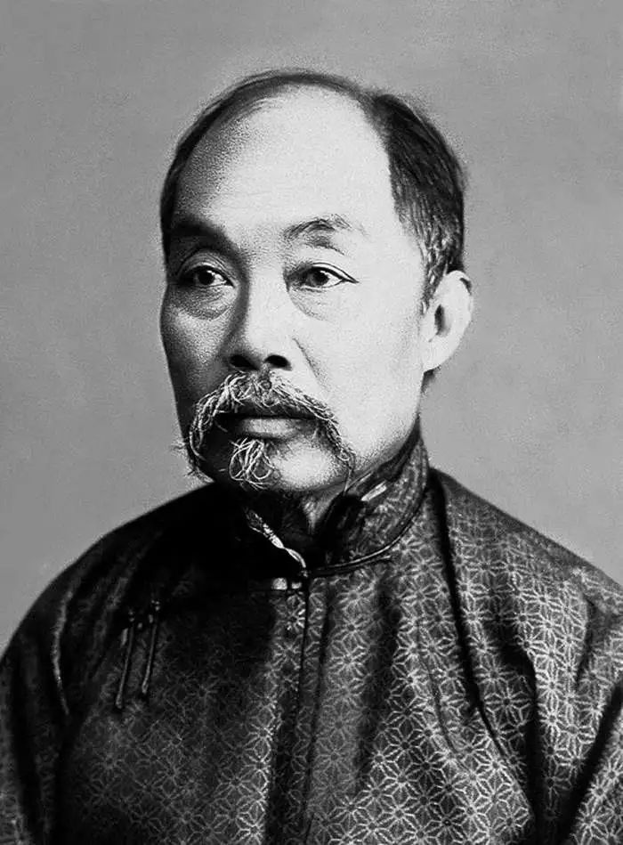

据江海之会，扼南北之喉 —— 欢迎来到我的家乡

点击前往百度百科张謇（1853-1926），字季直，江苏南通人，清末状元。他不仅是中国近代杰出的实业家、政治家、教育家，更是南通近代化的奠基人。面对内忧外患的晚清局势，他毅然弃政从商，提出“父教育，母实业”的宏伟主张。
张謇一生创办了以大生纱厂为核心的诸多企业，并建立了中国第一所师范学校（南通师范）和第一座公共博物馆（南通博物苑）。他倾尽一生心血与财富，将南通建设成为了享誉全国的“中国近代第一城”，其敢为人先、实干兴邦的精神至今仍深深影响着这片土地。
南通地处江海交汇的南北过渡带，因历史上的江岸坍塌、沙洲涨落以及多次移民潮，形成了极为独特且复杂的方言分布。民间素有“十里不同音，百里不同俗”的说法。在这片并不辽阔的土地上，竟并存着七种截然不同的方言，这在中国语言文化中是十分罕见的“方言岛”奇观。这些方言大致可归属为江淮官话和吴语两大派系，不仅保留了大量古汉语的入声和特殊词汇，更是南通江海文化的活化石。无论你是听到字正腔圆、铿锵有力的如皋话，还是吴侬软语、婉转绵长的启海话，都能感受到南通深厚的历史底蕴与包容性。
| 方言分类 | 代表区域 | 方言特色 |
|---|---|---|
| 南通话（江淮官话） | 崇川区、通州区部分 | 语调独特，保留了大量古汉语发音，是典型的“方言岛” |
| 如海方言（江淮官话） | 如皋、海安、如东 | 受苏北语言影响较大，发音较为硬朗干脆 |
| 启海话（吴语太湖片） | 启东、海门、通州东部 | 又称“沙地话”，与上海崇明话同源，属于江南吴侬软语 |
万里长江入海口北岸，坐落着著名的“南通五山”与环抱古城的“濠河”。它们不仅构成了南通优美的生态画卷，每一座山、每一湾水背后更蕴含着丰富的神话与历史传说。
狼山是五山之首，也是著名的佛教名山。相传大势至菩萨在此化身为大圣菩萨（僧伽大圣），施展佛法降伏了盘踞于此的白狼精，狼山因此得名。山顶的广教禅寺香火鼎盛，自古便有“江海第一山”的美誉，承载着南通人祈福保平安的深厚信仰。
关于军山的传说充满了历史的厚重感。一说秦始皇当年东巡时，为防海盗而在此驻扎军队；民间也有传闻称楚汉相争时，西楚霸王项羽曾在此安营扎寨。山上不仅建有气象台，还有供奉观音的普陀院，是一座融汇了军事传说与宗教文化的秀丽山峰。
剑山因其山脊笔直、形似一柄出鞘的宝剑而得名。相传秦始皇曾为防此地出天子，一剑斩断地脉，留下了剑身化作此山。此外，民间流传文殊菩萨曾在剑山显化，故山上的文殊院常年吸引众多学子在考前来此祈求金榜题名、智慧广开。
黄泥山位于长江江畔，山石多呈黄褐色，宛如一条黄龙卧于江边。传说晋代名将王濬曾率领水军在此停泊休整。此处不仅保留着古炮台遗址，见证了南通人民抗击外侮的英勇历史，后来也成为了张謇先生开展水利与港口建设的重要见证地。
马鞍山因其山峰两头高、中间低，形似马鞍而得名。民间浪漫地传说这是天马下凡时，不慎遗落人间的神马坐骑之鞍。此山环境极为幽静，植被丰茂，是五山中颇具野趣的一座，相传古代隐士多爱在此结茅修道，至今仍是市民踏青赏花的好去处。
濠河是南通的母亲河，更是国内仅存的四条古护城河之一。相传濠河水系源自后周时期筑城时的护城壕，千百年来水波荡漾，如同一条翠绿的项链环抱古城。夜游濠河，水色灯影交相辉映，沿岸分布着博物苑、钟楼等众多名胜古迹，流淌着近代第一城的岁月记忆。
南通的教育水平在江苏省内乃至全国都享有盛誉，民间素有“全国教育看江苏，江苏教育看南通”的美谈，其整体基础教育实力完全可以与省会南京比肩齐名。早在百年前，张謇先生便在此首创师范学校，奠定了这座城市深厚的“尊师重教”底蕴。如今，南通的基础教育模式更是全国的标杆，学风严谨踏实，各大统考成绩常年名列前茅，南通中学、海门中学等百年名校更是人才辈出。卓越的教育不仅培养了大批顶尖人才，也成为了南通最亮丽的城市名片之一。